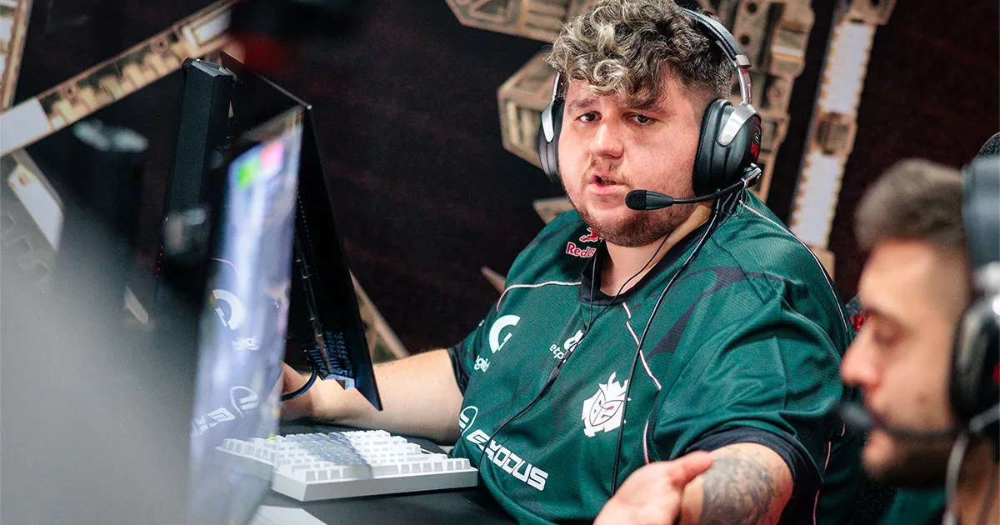

Astralis shock NAVI on Stage 2's opening day in Singapore — G2, FUT and 1win join them at 2-0
Stage 2 of the PGL Major Singapore 2026 opened with sixteen best-of-ones on Saturday, and the last one rewrote the bracket: Astralis beat NAVI to finish the day undefeated, while three round-two matches went to overtime and four teams fell to 0-2, one loss from elimination.

Disclosure: this post contains affiliate links. I earn a commission on qualifying purchases.
Stage 2 of the PGL Major Singapore 2026 is underway, and its first day saved the biggest result for last. Astralis — the new-look side plenty of people had written off before this Major — closed Saturday's sixteen best-of-ones by beating NAVI on Ancient, finishing the day 2-0 alongside G2, FUT and 1win (competing in Singapore as THE ONE). Four teams are already one loss from going home.
Round 1 went to the invited teams
The eight invited teams opened Stage 2 against the eight Stage 1 survivors, and the gap showed early: the invites went 6-2 in the first round. FUT produced the morning's headline, ending FlyQuest's perfect run in Singapore — FlyQuest had gone through Stage 1 without dropping a map — with a comeback win on Cache after trailing at the half. The MongolZ beat Lynn Vision on Inferno, Astralis opened their account against Imperial, G2 handled Liquid on Mirage, and NAVI edged PARIVISION on Ancient. NiP and 100 Thieves were the only Stage 1 teams to bank a win, over Nemiga and MIBR respectively.
The round's standout performance came on Cache, where 1win's in-game leader nafany dropped 28 kills against Eternal Fire — reported by Pley as the most anyone has recorded on the map at a Counter-Strike 2 Major — to drag his team back from a 10-5 deficit and close out the win.
Round 2 delivered the upsets
If round 1 followed the script, round 2 tore it up. Astralis' win over NAVI was the result of the day, and FlyQuest matched the drama on the other stream, outlasting PARIVISION in overtime on Inferno. Three of the eight matches needed extra rounds in all: Liquid survived Eternal Fire in a marathon on Anubis, and MIBR edged Imperial in another overtime finish.
Elsewhere, G2 beat NiP to stay perfect, FUT made it two from two against 100 Thieves, 1win took down The MongolZ, and Nemiga demolished Lynn Vision — the most one-sided scoreline of the day — to leave the Chinese side winless.
Where Stage 2 stands
2-0: G2, 1win, FUT, Astralis — one win from Stage 3.
1-1: NiP, The MongolZ, Nemiga, Liquid, 100 Thieves, MIBR, NAVI, FlyQuest.
0-2: Lynn Vision, Eternal Fire, Imperial, PARIVISION — one loss from elimination.
Stage 2 runs through December 1, with eight of the sixteen teams advancing to Stage 3. Sunday's round 3 is where the format sharpens: the 2-0 teams meet in best-of-three qualification matches — G2 against 1win, FUT against Astralis — while the 0-2 pool plays elimination best-of-threes, Eternal Fire against Lynn Vision and Imperial against PARIVISION. NAVI, suddenly in the middle of the Swiss bracket, face Liquid in a best-of-one with no room for another slip.
The lesson of day one is the oldest one in Swiss-format Counter-Strike: the best-of-one does not care about your seeding. NAVI and The MongolZ both arrived as favourites and both lost. Astralis arrived as a question mark and left as the story.
Sources: How Singapore Major Stage 2 day one went: Astralis shock NAVI (Pley) · PGL Major Singapore 2026 Stage 2 Results Day 1: G2 Stay Perfect (Hotspawn) · PGL Singapore Major 2026 Stage 2 Day 1 Recap (TalkEsport) · Singapore Major Stage 2: Teams, Schedule and Results (SkinsMonkey)
Gear up: Razer — mice, keyboards, headsets and laptops.